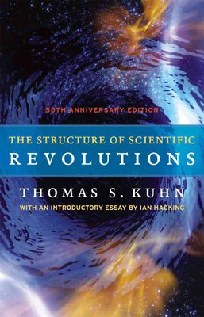

The Structure of Scientific Revolutions
This post rescues content from a series of tweets I wrote in 2018.

by Thomas S. Kuhn, 1962. 
I loved The Structure of Scientfic Revolutions. It was recommended to me as having similar impact to undergraduate classics like Godel, Escher, Bach, or The Blind Watchmaker. I'm going to just summarize the content here, so: Spoilers.
It begins by observing that discredited scientific theories, even those which seem laughable today, such as phrenology, or the Ptolemaic model of the heavens, were not crackpot theories with shaky evidence. Earnest, hardworking practitioners refined them using sensible processes, which by the 17th century were converging on the modern scientific method.
This process of "normal" science excels at the incremental refinement of established scientific theories. But in practice, is unable to perform the revolutionary transitions required to overcome outmoded theories and replace them with others, no matter how bizarre and wrongheaded the initial theory looks to us now with hindsight.
So what is the unarticulated process that is responsible for these transitions, i.e. how do scientific revolutions happen? We have intuitive visions of this occurring overnight. An individual experiment yields unexpected results, contradicting conventional theory, while irrefutably supporting an alternate theory to take its place. But in practice, this never happens.
At first, and often for years or centuries, no discrepancy between theory and experiment is noticed, because the prevailing theories of the time have a massive shaping effect on what questions it is valid to ask, what experiments are deemed useful to do.
For practitioners to turn their backs on an established theory in such a time is never productive. They are shunned for turning their backs on science itself.
We see this vividly today with homeopaths (my own example, not the book's). Often, and incorrectly, homeopathy is mocked because the theories sound ridiculous to one steeped in a conventional understanding of chemistry. People will jeer at how total dilution can 'obviously' have no effect, or at the idea of water exhibiting some sort of 'memory'. But such jeering is as scientifically illiterate as the quacks it contends with. The argument from personal incredulity has no place in determining scientific truth. No newer theory makes sense in the light of the more limited, and often contradictory, paradigm that it eventually replaces. The only useful criteria is to try it out. Does it actually work? This is the axis upon which homeopathy should be judged. (and upon which it has decisively been found wanting.)
All contradictions to conventional science suffer a similar ignominious treatment, regardless of how right they might later turn out to be. Before any revolution of theory can overturn conventional understanding, the stage must be set, the community prepared.
The process begins as the incremental advances of "normal" science gradually increase the scope and precision of accepted theories. Until this point, measurements in which experiment does not conform to theory are either ignored as erroneous artifacts, or are dismissed as indicative of some separate, unknown phenomena. They are never interpreted to mean prevailing theory is wrong.
However the growing scope & precision of theory and measurement gradually uncovers more of these discrepancies, or reveals them in finer detail. Eventually they become too prominent to ignore, and a kind of phase transition occurs.
Eventually, the discrepancies become so prominent and concerning that they are judged to be a valid area of study in themselves, rather than just annoying aberrations. Leading practitioners devote themselves to the task. Foundations of the specialisation that were once accepted without question now come under scrutiny.
To partially explain the discrepancies, people introduce many incompatible variations on current theories. The once unified field divides into cliques, supporting different theoretical variations. The field, formerly a united mass, calves into fragments.
If one of these variations on existing theory manages to explain all observations, then this gradually gains mindshare, until the whole community has migrated to this new, incrementally improved theory.
However, in cases where a truly revolutionary change is required, such incrementalism is insufficient, and none of the theoretical variations are fully successful in explaining all observations. The factions' differing underlying assumptions give them no common ground upon which to arbitrate their differences, so their debates are irreconcilable. The fragments are melting, into a churning liquid of disagreement.
This state is notably similar to the state of a nascent field before any established scientific theories have taken hold.
All is chaos, with different groups supporting different ideas, agreeing on nothing. The field is in turmoil, its practitioners in genuine emotional distress. Their personal identities are undermined. What does it mean to be a practitioner when nobody can agree on what the field even is? Is what we do even science at all? A crisis has arrived. We are at boiling point.
Kuhn compares this to individuals in psychological experiments, given cunningly contradictory sensual stimuli. At first they don't notice anything wrong about a brief glimpse of a playing card showing a red king of clubs. As the length of their glimpse expands, and the stimulation becomes more intrusive, the subject starts to hesitate, and stumble on words. Suddenly it impinges on their consciousness, and they cry out, distressed, uncertain of even basic facts. "My God! What did I see? Are clubs always red? What's happening here?"
Kuhn also compares scientific revolutions to their social and political counterparts, in a chillingly familiar passage:
"Political revolutions aim to change political institutions in ways that those institutions themselves prohibit. Their success therefore necessitates the partial relinquishment of one set of institutions in favor of another, and in the interim society is not fully governed by institutions at all.
Initially it is crisis alone that attenuates the role of political institutions [...] In increasing numbers, individuals become increasingly estranged from political life, and behave more & more eccentrically within it.
Then, as the crisis deepens, many individuals commit themselves to [...] some new institutional framework. At that point, society is divided into competing camps or parties, one seeking to defend the old institutional constellation, others seeking to institute some new one.
Once that polarization has occurred, political recourse fails. Because they differ about the political matrix within which political change is to be achieved and evaluated, and acknowledge no common supra-institutional framework for adjudication of differences, the parties to a revolutionary conflict must finally resort to the techniques of mass persuasion, often including force."
At any point, the boldest practitioners, often those with least invested in the previous status quo, such as the relatively young, or those entering from adjacent fields, will introduce strikingly different sets of theories. But only now that the stage is set, amongst such distressing chaos, is the community ready to entertain truly revolutionary ideas.
Occasionally, one of these new ideas will succeed in explaining all the observations, but in order to do so, it requires incommensurable changes in the underlying philosophy of the field, from the axiomatic definitions, to the set of questions that are valid to ask. One can no longer ask, of a spherical Earth, "What happens if you fall off?"
Notably, many revolutionary changes are not an unalloyed good. Gains in explicative power in one area are often balanced by losses elsewhere.
As in evolution, the new theory is not necessarily more correct, so much as it is a better fit for the current circumstances, i.e. providing greater predictive power in an area that is currently pertinent. Maybe scientific progress is more obviously useful to society in that area, or instruments are more capable of making measurements in that area. The two often coincide, since influences are are unable to detect or manipulate are also unlikely to be of much direct use to society. So as the social and technological context evolves, so does the relative fitness of potential competing paradigms.
Nobody understands this trade-off more deeply than the field's most invested practitioners, who feel the losses of losing the old model most keenly, and therefore may resist the new paradigm for the remainder of their careers. The new paradigm will not achieve total dominance until the field is populated by a whole new generation.
I am reminded of the dark priesthood of command-line programmers, although I note with no little joy that our merry band includes some of the best and brightest of the next generation (as judged by my own paradigm's criteria.)